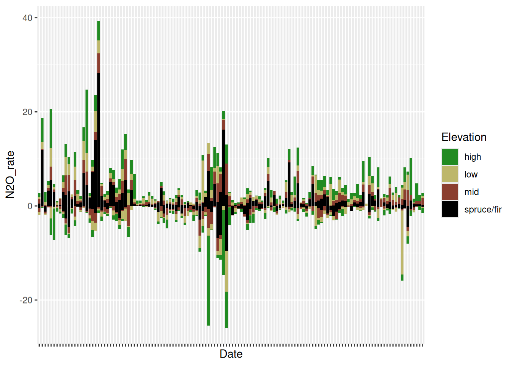

Introduction
The USDA Forest service has been assisting with the management of experimental forests for years now, and in one particularly interesting study done on the Hubbard Brook Experimental Forest, they’ve maintained a collaborative effort to study the Soil atmosphere fluxes of trace gases. In this short blog post, our team would like to share and discuss the information gathered throughout this twenty year long study on the fluxes of Carbon dioxide (CO2), Nitrous oxide (N2O) and Methane (CH4) in the Hubbard Brook Experimental study.
Below is a list of the packages used.
Code
library(tidyverse)
library(gt)
library(readr)
library(dplyr)
library(tidyr)
library(ggplot2)Methods
For simplicity’s sake, we have already combined both the Watershed one and Bear Brook data into one graph for a more broad look at the information. We will be using the “HubbardBrook_TraceGas_Watershed1_BearBrook_2002-2022” data set for this post.
Because of the frequency at which data was recorded in this survay, displaying every date would make the information messy and incoherent, so we will refer to a “fifths” scale when refering to dates. Because the study takes place over the course of twenty years, we will divide periods into segments.(Like so;2002,2007,2012,2017,20022)
Hubbard Brook data
The parks data include measurements of every tree in every park in Portland, Oregon. We can load the data in as follows:
data <- read.csv("HubbardBrook_TraceGas_Watershed1_BearBrook_2002-2022.csv")NITROUS OXIDE (N2O)
The first significant observation that can be made about the presence of Nitrous Oxide (N2O) in the soils of Hubbard Brook is the substantial increase of emissions in all elevation classes around seven years into the survey. As we will see in the following graphs, with a massive spike in emissions, there is usually a substantial decrease that follows,and moving towards the twelve-year mark, we see that there was a long period of N2O intake in high-elevation areas with minimal release.
The graph shows that soil at high elevations often release and take in the most gas emissions, a pattern we will see followed in all three graphs.
Another peculiar thing to note about this 6-7-year mark is the presence of spruce/fir plots sometimes dominating the other elevations in number, a rather unique characteristic of the N2O observations.
The fluxes between the 7-12 year mark are substantial because it suggests a high level of human-related contributions to its increase. Agriculture, industrial work, and watershed management are often to blame for this increase. Presumably, the soil eventually began taking in massive rates of Nitrous Oxide before releasing it into the air again at a far more constant rate with the exception of a few substantial spikes here and there.
Code
data <- replace(data , data == -9999, NA)
ggplot(data = data, mapping = aes(y = N2O_rate, x = Date, fill = Elevation)) +
geom_col () + theme(axis.text.x = element_blank())+ scale_fill_manual(values = c("forestgreen", "darkkhaki", "coral4","black"))Warning: Removed 8 rows containing missing values or values outside the scale range
(`geom_col()`).
CARBON DIOXIDE
Perhaps the most common and least concerning of the three gases observed. As it is a natural byproduct of respiration, the numbers will remain relatively stable throughout the years, going negative very rarely.
Somewhere along the seventeen-year mark, between the middle and end of the observation, the spike in carbon emissions halts promptly at a rate of four in high-elevation plots as the highest the CO2 levels will ever get at that point in time. Infact, this point is where each recorded plot sees its highest spike in carbon emissions, all at the same time, which suggest a number of things. A substantial increase in temperature is the most likely cause.
Code
data <- replace(data , data == -9999, NA)
ggplot(data = data, mapping = aes(y = CO2_rate, x = Date, fill = Elevation)) +
geom_col () + theme(axis.text.x = element_blank())+ scale_fill_manual(values = c("forestgreen", "darkkhaki", "coral4","black"))Warning: Removed 6 rows containing missing values or values outside the scale range
(`geom_col()`).METHANE (CH4)
Methane is the single most dangerous gas of the three observed in Hubbard Brook and the graph shows us an observable constant in the amount that’s been absorbed throughout the years. Juxtaposed to the other graphs presented, methane is almost strictly in the negative (also boasting far greater numbers), which means that it’s being absorbed into the soil at mass. A little past the twelve-year mark we do see a concerning amount of all elevation plots releasing methane and then immediately taking in significantly more, far more than double the amount that was released.
While this suggests many things, nothing concrete is known as of now; however, we believe that there could have been a disturbance in the soil of some kind that caused the sudden release, and after taking time to settle, the expended methane was absorbed back into the soil allong with a substantial amount of surrounding methane from other sources.
Code
data <- replace(data , data == -9999, NA)
ggplot(data = data, mapping = aes(y = CH4_rate, x = Date, fill = Elevation)) +
geom_col () + theme(axis.text.x = element_blank())+ scale_fill_manual(values = c("forestgreen", "darkkhaki", "coral4","black"))Warning: Removed 9 rows containing missing values or values outside the scale range
(`geom_col()`).Conclusions
To conclude, we believe that these observations are critical for predicting the rate at wich the environment could be threatened. Understanding the patterns and possibilities of greenhouse gasses and how they may fluctuate in is one of the many ways we can prepare and halt any potential gas threats in the future.
knitr::include_graphics("https://newengland.com/wp-content/uploads/2023/08/YK0923_HubbardBrook_5-1024x681.jpg")
That will be all for now! Have a wonderful day!